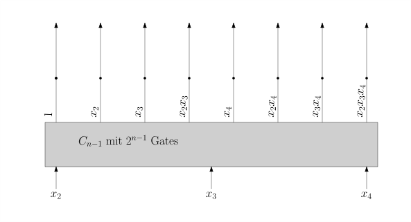

2.6 Untere und obere Schranken./wly/02/06-lower-and-upper-bounds.wly:2:11
Wir haben zwei Methoden gesehen, zu einer beliebigen./wly/02/06-lower-and-upper-bounds.wly:4:5 Booleschen Funktion ./wly/02/06-lower-and-upper-bounds.wly:5:5$f : \fcube$./wly/02/06-lower-and-upper-bounds.wly:5:25 einen Booleschen./wly/02/06-lower-and-upper-bounds.wly:5:37 Schaltkreis zu konstruieren: top-down, indem wir ./wly/02/06-lower-and-upper-bounds.wly:6:5$f$./wly/02/06-lower-and-upper-bounds.wly:6:54 ./wly/02/06-lower-and-upper-bounds.wly:6:57 in ./wly/02/06-lower-and-upper-bounds.wly:7:5$f_0$./wly/02/06-lower-and-upper-bounds.wly:7:8 und ./wly/02/06-lower-and-upper-bounds.wly:7:13$f_1$./wly/02/06-lower-and-upper-bounds.wly:7:18 zerlegen und mit Hilfe eines./wly/02/06-lower-and-upper-bounds.wly:7:23 if-then-else-Gates wieder zusammenfügen; und bottom-up./wly/02/06-lower-and-upper-bounds.wly:8:5 als DNF oder CNF. Die so entstandenen Schaltkreise./wly/02/06-lower-and-upper-bounds.wly:9:5 hatten Größe ./wly/02/06-lower-and-upper-bounds.wly:10:5$O(2^n)$./wly/02/06-lower-and-upper-bounds.wly:10:18 (bzw. ./wly/02/06-lower-and-upper-bounds.wly:10:26$O(n2^n)$./wly/02/06-lower-and-upper-bounds.wly:10:33 wenn wir zuerst./wly/02/06-lower-and-upper-bounds.wly:10:42 eine CNF oder DNF bauen und dann auf Fan-in 2./wly/02/06-lower-and-upper-bounds.wly:11:5 bestehen). Die offensichtliche Frage: geht es besser?./wly/02/06-lower-and-upper-bounds.wly:12:5 Die Antwort: Ja, aber nicht viel besser../wly/02/06-lower-and-upper-bounds.wly:13:5
Theorem 2.6.1 (Shannon)../wly/02/06-lower-and-upper-bounds.wly:15:5 Es gibt Boolesche Funktionen ./wly/02/06-lower-and-upper-bounds.wly:16:21$f$./wly/02/06-lower-and-upper-bounds.wly:16:51,./wly/02/06-lower-and-upper-bounds.wly:16:54 die./wly/02/06-lower-and-upper-bounds.wly:16:54 keine Schaltkreise kleiner als ./wly/02/06-lower-and-upper-bounds.wly:17:9$\Omega(2^n / n)$./wly/02/06-lower-and-upper-bounds.wly:17:40 ./wly/02/06-lower-and-upper-bounds.wly:17:57 haben../wly/02/06-lower-and-upper-bounds.wly:18:9
Beweis. Die Beweismethode ist vielleicht neu für Sie, aber in./wly/02/06-lower-and-upper-bounds.wly:21:9 der Komplexitätstheorie und Kombinatorik sehr wichtig../wly/02/06-lower-and-upper-bounds.wly:22:9 Wir stellen uns zwei ./wly/02/06-lower-and-upper-bounds.wly:23:9Zählaufgaben./wly/02/06-lower-and-upper-bounds.wly:23:31:./wly/02/06-lower-and-upper-bounds.wly:23:44 (1) wie viele./wly/02/06-lower-and-upper-bounds.wly:23:44 Boolesche Funktion ./wly/02/06-lower-and-upper-bounds.wly:24:9$f : \fcube$./wly/02/06-lower-and-upper-bounds.wly:24:28 gibt es? (2) Wie./wly/02/06-lower-and-upper-bounds.wly:24:40 viele Boolesche Schaltkreise mit ./wly/02/06-lower-and-upper-bounds.wly:25:9$n$./wly/02/06-lower-and-upper-bounds.wly:25:42 Input-Variablen,./wly/02/06-lower-and-upper-bounds.wly:25:45 Fan-in 2 und ./wly/02/06-lower-and-upper-bounds.wly:26:9$s$./wly/02/06-lower-and-upper-bounds.wly:26:22 Gates gibt es? Wenn die Antwort auf./wly/02/06-lower-and-upper-bounds.wly:26:25 (2) kleiner ausfällt als auf (1), dann können nicht./wly/02/06-lower-and-upper-bounds.wly:27:9 alle Booleschen Funktionen mit ./wly/02/06-lower-and-upper-bounds.wly:28:9$n$./wly/02/06-lower-and-upper-bounds.wly:28:40 Variablen einen./wly/02/06-lower-and-upper-bounds.wly:28:43 Schaltkreis mit weniger als ./wly/02/06-lower-and-upper-bounds.wly:29:9$s$./wly/02/06-lower-and-upper-bounds.wly:29:37 Gates haben. Es gibt./wly/02/06-lower-and-upper-bounds.wly:29:40 einfach nicht genug für alle. Dahinter steht folgende./wly/02/06-lower-and-upper-bounds.wly:30:9 Beobachtung: zwei verschiedene Boolesche Funktionen./wly/02/06-lower-and-upper-bounds.wly:31:9 brauchen verschiedene Schaltkreise; sie können sich./wly/02/06-lower-and-upper-bounds.wly:32:9 nicht einen "teilen" (dieses Behauptung erscheint./wly/02/06-lower-and-upper-bounds.wly:33:9 trivial und ist es auch; machen Sie sich aber klar,./wly/02/06-lower-and-upper-bounds.wly:34:9 dass wir diese Eigenschaft benötigen, falls Sie./wly/02/06-lower-and-upper-bounds.wly:35:9 nämlich ein Abzählargument in anderen Kontexten./wly/02/06-lower-and-upper-bounds.wly:36:9 anwenden). Die Antwort auf (1) ist einfach: es gibt./wly/02/06-lower-and-upper-bounds.wly:37:9 genau ./wly/02/06-lower-and-upper-bounds.wly:38:9$2^{2^n}$./wly/02/06-lower-and-upper-bounds.wly:38:15 Boolesche Funktionen mit ./wly/02/06-lower-and-upper-bounds.wly:38:24$n$./wly/02/06-lower-and-upper-bounds.wly:38:50 ./wly/02/06-lower-and-upper-bounds.wly:38:53 Variablen. Warum? Die Wahrheitstabelle hat ./wly/02/06-lower-and-upper-bounds.wly:39:9$2^n$./wly/02/06-lower-and-upper-bounds.wly:39:52 ./wly/02/06-lower-and-upper-bounds.wly:39:57 Zeilen. Sie könnne sich also ./wly/02/06-lower-and-upper-bounds.wly:40:9$2^n$./wly/02/06-lower-and-upper-bounds.wly:40:38 mal für ./wly/02/06-lower-and-upper-bounds.wly:40:43$0$./wly/02/06-lower-and-upper-bounds.wly:40:52 oder./wly/02/06-lower-and-upper-bounds.wly:40:55 ./wly/02/06-lower-and-upper-bounds.wly:41:9$1$./wly/02/06-lower-and-upper-bounds.wly:41:9 entscheiden../wly/02/06-lower-and-upper-bounds.wly:41:12
Behauptung Sei ./wly/02/06-lower-and-upper-bounds.wly:45:13$s \geq n \geq 1$./wly/02/06-lower-and-upper-bounds.wly:45:17../wly/02/06-lower-and-upper-bounds.wly:45:34 Dann gibt es höchstens./wly/02/06-lower-and-upper-bounds.wly:45:34 ./wly/02/06-lower-and-upper-bounds.wly:46:13$s^{2s+1}$./wly/02/06-lower-and-upper-bounds.wly:46:13 Schaltkreise mit ./wly/02/06-lower-and-upper-bounds.wly:46:23$n$./wly/02/06-lower-and-upper-bounds.wly:46:41 Input-Variablen,./wly/02/06-lower-and-upper-bounds.wly:46:44 Fan-in 2 und ./wly/02/06-lower-and-upper-bounds.wly:47:13$s$./wly/02/06-lower-and-upper-bounds.wly:47:26 Gates../wly/02/06-lower-and-upper-bounds.wly:47:29
Beweis. Wir bauen den Schaltkreis, indem wir erst einmal ./wly/02/06-lower-and-upper-bounds.wly:50:13$s$./wly/02/06-lower-and-upper-bounds.wly:50:62 ./wly/02/06-lower-and-upper-bounds.wly:50:65 Gates unbeschriftet "hinmalen". Um nun zu entscheiden,./wly/02/06-lower-and-upper-bounds.wly:51:13 was für ein Schaltkreis das sein soll, müssen wir./wly/02/06-lower-and-upper-bounds.wly:52:13 Entscheidungen treffen:./wly/02/06-lower-and-upper-bounds.wly:53:13
-
Für jedes der ./wly/02/06-lower-and-upper-bounds.wly:57:21$s$./wly/02/06-lower-and-upper-bounds.wly:57:35 Gates, was es sein soll../wly/02/06-lower-and-upper-bounds.wly:57:38
-
Ein Input-Gate? Dann müssen wir es mit einer der ./wly/02/06-lower-and-upper-bounds.wly:61:29$n$./wly/02/06-lower-and-upper-bounds.wly:61:78 ./wly/02/06-lower-and-upper-bounds.wly:61:81 Input-Variablen beschriften../wly/02/06-lower-and-upper-bounds.wly:62:29
-
Ein Not-Gate? Dann müssen wir eines der anderen Gates./wly/02/06-lower-and-upper-bounds.wly:65:29 als Vorgänger-Gate wählen. Wir haben höchstens ./wly/02/06-lower-and-upper-bounds.wly:66:29$s-1$./wly/02/06-lower-and-upper-bounds.wly:66:76 ./wly/02/06-lower-and-upper-bounds.wly:66:81 Möglichkeiten../wly/02/06-lower-and-upper-bounds.wly:67:29
-
Ein And-Gate? Dann müssen wir zwei der anderen Gates./wly/02/06-lower-and-upper-bounds.wly:70:29 als Vorgänger-Gates wählen. Wir haben höchstesn./wly/02/06-lower-and-upper-bounds.wly:71:29 ./wly/02/06-lower-and-upper-bounds.wly:72:29${s-1 \choose 2} = \frac{(s-1)(s-2)}{2}$./wly/02/06-lower-and-upper-bounds.wly:72:29 ./wly/02/06-lower-and-upper-bounds.wly:72:69 Möglichkeiten../wly/02/06-lower-and-upper-bounds.wly:73:29
-
Ein Or-Gate? Dann haben wir auch höchstens./wly/02/06-lower-and-upper-bounds.wly:76:29 ./wly/02/06-lower-and-upper-bounds.wly:77:29${s-1 \choose 2}$./wly/02/06-lower-and-upper-bounds.wly:77:29 Möglichkeiten../wly/02/06-lower-and-upper-bounds.wly:77:46
Insgesamt haben wir also./wly/02/06-lower-and-upper-bounds.wly:79:21
$$ n + (s-1) + 2 {s-1 \choose 2} = n + s - 1 + (s-1)(s-2) = n + s^2 - 2s + 1 \leq s^2 $$./wly/02/06-lower-and-upper-bounds.wly:81:21Möglichkeiten../wly/02/06-lower-and-upper-bounds.wly:86:21
-
-
Für den gesamten Schaltkreis: welches Gate./wly/02/06-lower-and-upper-bounds.wly:89:21 Output-Gate sein soll. Da haben wir ./wly/02/06-lower-and-upper-bounds.wly:90:21$s$./wly/02/06-lower-and-upper-bounds.wly:90:57 ./wly/02/06-lower-and-upper-bounds.wly:90:60 Möglichkeiten../wly/02/06-lower-and-upper-bounds.wly:91:21
Um die Gesamtzahl der Möglichkeiten abzuschätzen,./wly/02/06-lower-and-upper-bounds.wly:93:13 müssen wir das alles multiplizieren. Wir haben./wly/02/06-lower-and-upper-bounds.wly:94:13 höchstens./wly/02/06-lower-and-upper-bounds.wly:95:13
$$
\underbrace{s}_{\textnormal{Output-Gate wählen}} \cdot \underbrace{\prod_{i=1}^s
(s^2)}_{\textnormal{jedes Gate beschriften}}
= s \cdot (s^2)^s = s^{2s+1}
$$./wly/02/06-lower-and-upper-bounds.wly:97:13
Möglichkeiten. Es gibt also höchstens ./wly/02/06-lower-and-upper-bounds.wly:103:13$s^{2s+1}$./wly/02/06-lower-and-upper-bounds.wly:103:51 ./wly/02/06-lower-and-upper-bounds.wly:103:61 verschiedene Schaltkreise mit ./wly/02/06-lower-and-upper-bounds.wly:104:13$s$./wly/02/06-lower-and-upper-bounds.wly:104:43 Gates, Fan-in 2 und./wly/02/06-lower-and-upper-bounds.wly:104:46 ./wly/02/06-lower-and-upper-bounds.wly:105:13$n$./wly/02/06-lower-and-upper-bounds.wly:105:13 Variablen../wly/02/06-lower-and-upper-bounds.wly:105:16A\(\square\)
Wählen wir nun ./wly/02/06-lower-and-upper-bounds.wly:107:9$s := 2^{n} / (2n)$./wly/02/06-lower-and-upper-bounds.wly:107:24../wly/02/06-lower-and-upper-bounds.wly:107:43 Wieviele./wly/02/06-lower-and-upper-bounds.wly:107:43 Schaltkreise mit ./wly/02/06-lower-and-upper-bounds.wly:108:9$n$./wly/02/06-lower-and-upper-bounds.wly:108:26 Variablen, Fan-in 2 und ./wly/02/06-lower-and-upper-bounds.wly:108:29$s$./wly/02/06-lower-and-upper-bounds.wly:108:54 ./wly/02/06-lower-and-upper-bounds.wly:108:57 Gates gibt es? Die Schranke in der obigen Behauptung./wly/02/06-lower-and-upper-bounds.wly:109:9 sagt, dies seien höchstens./wly/02/06-lower-and-upper-bounds.wly:110:9
$$
\begin{align*}
\pfrac{2^n}{2n}^{\frac{2^{n}}{n} + 1}&= \left(2^{n - \log (2n)}\right)^{\frac{2^n}{n} + 1} \\
&= 2^{2^{n} + n - \log(2n) \frac{2^{n}}{n} - \log (2n)} \\
&\lt 2^{2^n} \ .
\end{align*}
$$./wly/02/06-lower-and-upper-bounds.wly:112:9
Also: es gibt mehr Boolesche Funktionen in ./wly/02/06-lower-and-upper-bounds.wly:118:9$n$./wly/02/06-lower-and-upper-bounds.wly:118:52 ./wly/02/06-lower-and-upper-bounds.wly:118:55 Variablen, als es Boolesche Schaltkreise mit./wly/02/06-lower-and-upper-bounds.wly:119:9 ./wly/02/06-lower-and-upper-bounds.wly:120:9$\frac{2^n}{2n}$./wly/02/06-lower-and-upper-bounds.wly:120:9 Gates gibt. Somit benötigen manche./wly/02/06-lower-and-upper-bounds.wly:120:25 Boolesche Funktionen mehr als ./wly/02/06-lower-and-upper-bounds.wly:121:9$\frac{2^n}{2n}$./wly/02/06-lower-and-upper-bounds.wly:121:39 Gates../wly/02/06-lower-and-upper-bounds.wly:121:55A\(\square\)
Übungsaufgabe 2.6.1./wly/02/06-lower-and-upper-bounds.wly:123:5 ./wly/02/06-lower-and-upper-bounds.wly:123:5 In Theorem und Beweis sprechen wir die ganze Zeit nur./wly/02/06-lower-and-upper-bounds.wly:124:9 von Schaltkreisen mit Fan-in 2. Was geschieht, wenn./wly/02/06-lower-and-upper-bounds.wly:125:9 wir beliebigen Fan-in erlauben? Wie ändern sich./wly/02/06-lower-and-upper-bounds.wly:126:9 Aussage und Beweis? Was geschieht, wenn wir weitere./wly/02/06-lower-and-upper-bounds.wly:127:9 Gates, z.B. ./wly/02/06-lower-and-upper-bounds.wly:128:9$\oplus$./wly/02/06-lower-and-upper-bounds.wly:128:21 als atomare Gates zulassen?./wly/02/06-lower-and-upper-bounds.wly:128:29
Der obige Beweis sagt noch mehr: der Anteil./wly/02/06-lower-and-upper-bounds.wly:130:5 Boolescher Funktionen, bei denen wir mit./wly/02/06-lower-and-upper-bounds.wly:131:5 ./wly/02/06-lower-and-upper-bounds.wly:132:5$\frac{2^n}{2n}$./wly/02/06-lower-and-upper-bounds.wly:132:5 Gates auskommen, ist verschwindend./wly/02/06-lower-and-upper-bounds.wly:132:21 klein. Fast ./wly/02/06-lower-and-upper-bounds.wly:133:5alle./wly/02/06-lower-and-upper-bounds.wly:133:18 Funktionen brauchen also riesige./wly/02/06-lower-and-upper-bounds.wly:133:23 Schaltkreise. In einem Gewissen Sinne haben wir also./wly/02/06-lower-and-upper-bounds.wly:134:5 einfach Glück: die Funktionen, die uns interessieren,./wly/02/06-lower-and-upper-bounds.wly:135:5 wie ./wly/02/06-lower-and-upper-bounds.wly:136:5$n$./wly/02/06-lower-and-upper-bounds.wly:136:9 -Bit-Addition, Majority, Parity und so./wly/02/06-lower-and-upper-bounds.wly:136:12 weiter, haben einfach niedrige Komplexität. Das liegt./wly/02/06-lower-and-upper-bounds.wly:137:5 wohl in der Natur der Sache: wir addieren,./wly/02/06-lower-and-upper-bounds.wly:138:5 multiplizieren, bauen Brücken, Häuser, Flugzeuge,./wly/02/06-lower-and-upper-bounds.wly:139:5 Computer, weil wir es ./wly/02/06-lower-and-upper-bounds.wly:140:5können./wly/02/06-lower-and-upper-bounds.wly:140:28,./wly/02/06-lower-and-upper-bounds.wly:140:35 weil also die dafür./wly/02/06-lower-and-upper-bounds.wly:140:35 benötigten Berechnungen effizient durchführbar sind../wly/02/06-lower-and-upper-bounds.wly:141:5
Forschungsprojekt. Finde eine konkret beschreibbare Funktion ./wly/02/06-lower-and-upper-bounds.wly:145:9$f: \fcube$./wly/02/06-lower-and-upper-bounds.wly:145:51,./wly/02/06-lower-and-upper-bounds.wly:145:62 ./wly/02/06-lower-and-upper-bounds.wly:145:62 die exponentiell viele (oder zumindest./wly/02/06-lower-and-upper-bounds.wly:146:9 superpolynomiell viele) Gates benötigt../wly/02/06-lower-and-upper-bounds.wly:147:9
Kandidaten für solche Funktionen gibt es viele. Im./wly/02/06-lower-and-upper-bounds.wly:149:5 Prinzip gibt uns jedes Entscheidungsproblem, dass für./wly/02/06-lower-and-upper-bounds.wly:150:5 eine "schwierige" Komplexitätsklasse vollständig ist,./wly/02/06-lower-and-upper-bounds.wly:151:5 einen Kandidaten. Also zum Beispiel./wly/02/06-lower-and-upper-bounds.wly:152:5 Graphenfärbbarkeit../wly/02/06-lower-and-upper-bounds.wly:153:5
Entscheidungsproblem 3-Färbbarkeit. Gegeben ein Graph ./wly/02/06-lower-and-upper-bounds.wly:157:9$G = (V,E)$./wly/02/06-lower-and-upper-bounds.wly:157:27,./wly/02/06-lower-and-upper-bounds.wly:157:38 gibt es eine Funktion./wly/02/06-lower-and-upper-bounds.wly:157:38
$$
\begin{align*}
c : V \rightarrow \{\textnormal{rot, grün, blau}\} \ ,
\end{align*}
$$./wly/02/06-lower-and-upper-bounds.wly:159:9
so dass ./wly/02/06-lower-and-upper-bounds.wly:163:9$c(u) \ne c(v)$./wly/02/06-lower-and-upper-bounds.wly:163:17 für alle ./wly/02/06-lower-and-upper-bounds.wly:163:32$\{u,v\} \in E$./wly/02/06-lower-and-upper-bounds.wly:163:42 ./wly/02/06-lower-and-upper-bounds.wly:163:57 gilt? Dass also benachbarte Knoten verschiedene Farben./wly/02/06-lower-and-upper-bounds.wly:164:9 bekommen?./wly/02/06-lower-and-upper-bounds.wly:165:9
3-Färbbarkeit ist ein zentrales NP-vollständiges./wly/02/06-lower-and-upper-bounds.wly:167:5 Problem. Wir vermuten also, dass es dafür keinen./wly/02/06-lower-and-upper-bounds.wly:168:5 polynomiellen Algorithmus gibt. Wir können es zur Zeit./wly/02/06-lower-and-upper-bounds.wly:169:5 (April 2024) aber nicht beweisen. Dies ist das./wly/02/06-lower-and-upper-bounds.wly:170:5 berühmte Problem P vs NP, von dem Sie sicher schon./wly/02/06-lower-and-upper-bounds.wly:171:5 gehört haben und das als eines der großen offenen./wly/02/06-lower-and-upper-bounds.wly:172:5 Probleme der Mathematik insgesamt gilt. Die Frage, ob./wly/02/06-lower-and-upper-bounds.wly:173:5 NP-Probleme polynomiell große Schaltkreise haben, ist./wly/02/06-lower-and-upper-bounds.wly:174:5 noch offener../wly/02/06-lower-and-upper-bounds.wly:175:5
Übungsaufgabe 2.6.2./wly/02/06-lower-and-upper-bounds.wly:177:5 ./wly/02/06-lower-and-upper-bounds.wly:177:5 Formal gesehen ist Graphenfärbbarkeit eine Sprache./wly/02/06-lower-and-upper-bounds.wly:178:9 ./wly/02/06-lower-and-upper-bounds.wly:179:9$L \subseteq \Sigma^*$./wly/02/06-lower-and-upper-bounds.wly:179:9 über einem Alphabet ./wly/02/06-lower-and-upper-bounds.wly:179:31$\Sigma$./wly/02/06-lower-and-upper-bounds.wly:179:52,./wly/02/06-lower-and-upper-bounds.wly:179:60 ./wly/02/06-lower-and-upper-bounds.wly:179:60 dass uns erlaubt, Graphen zu codieren. Wie können wir./wly/02/06-lower-and-upper-bounds.wly:180:9 ./wly/02/06-lower-and-upper-bounds.wly:181:9$L$./wly/02/06-lower-and-upper-bounds.wly:181:9 als Boolesche Funktion darstellen?./wly/02/06-lower-and-upper-bounds.wly:181:12
Obere Schranken: Die Lupanov-Schranke./wly/02/06-lower-and-upper-bounds.wly:184:9
Wir haben nun eine Konstruktion, die uns für jede./wly/02/06-lower-and-upper-bounds.wly:186:5 beliebige Funktion ./wly/02/06-lower-and-upper-bounds.wly:187:5$f: \fcube$./wly/02/06-lower-and-upper-bounds.wly:187:24 Schaltkresie mit./wly/02/06-lower-and-upper-bounds.wly:187:35 ./wly/02/06-lower-and-upper-bounds.wly:188:5$O(2^n)$./wly/02/06-lower-and-upper-bounds.wly:188:5 Gates baut. Wir haben eine untere Schranke,./wly/02/06-lower-and-upper-bounds.wly:188:13 die besagt, dass es mit weniger als ./wly/02/06-lower-and-upper-bounds.wly:189:5$\frac{2^{n}}{2n}$./wly/02/06-lower-and-upper-bounds.wly:189:41 ./wly/02/06-lower-and-upper-bounds.wly:189:59 Gates nicht geht. Diese beiden Schranken lassen aber./wly/02/06-lower-and-upper-bounds.wly:190:5 immer noch eine Lücke der Größenordnung ./wly/02/06-lower-and-upper-bounds.wly:191:5$n$./wly/02/06-lower-and-upper-bounds.wly:191:45../wly/02/06-lower-and-upper-bounds.wly:191:48 Können./wly/02/06-lower-and-upper-bounds.wly:191:48 wir sie schließen?./wly/02/06-lower-and-upper-bounds.wly:192:5
Theorem 2.6.2 (Lupanov)./wly/02/06-lower-and-upper-bounds.wly:194:5../wly/02/06-lower-and-upper-bounds.wly:196:20 Für jede Boolesche Funktion in ./wly/02/06-lower-and-upper-bounds.wly:196:20$n$./wly/02/06-lower-and-upper-bounds.wly:196:53 ./wly/02/06-lower-and-upper-bounds.wly:196:56 Variablen gibt es einen Schaltkreis mit Fan-in 2 und./wly/02/06-lower-and-upper-bounds.wly:197:9 ./wly/02/06-lower-and-upper-bounds.wly:198:9$O(2^n / n)$./wly/02/06-lower-and-upper-bounds.wly:198:9 Gates../wly/02/06-lower-and-upper-bounds.wly:198:21
Beweis. Der Beweis fußt auf zwei Kernideen: erstens bauen wir./wly/02/06-lower-and-upper-bounds.wly:201:9 den Schaltkreis nicht mit AND- und OR- und NOT-Gates,./wly/02/06-lower-and-upper-bounds.wly:202:9 sondern mit AND- und XOR-Gates. Da wir nach./wly/02/06-lower-and-upper-bounds.wly:203:9 vollendeter Konstruktion jedes XOR-Gates durch einen./wly/02/06-lower-and-upper-bounds.wly:204:9 kleinen Schaltkreis aus vier AND/OR/NOT-Gates ersetzen./wly/02/06-lower-and-upper-bounds.wly:205:9 können, spielt dies keine Rolle (der Faktor 4./wly/02/06-lower-and-upper-bounds.wly:206:9 verschwindet in der ./wly/02/06-lower-and-upper-bounds.wly:207:9$O$./wly/02/06-lower-and-upper-bounds.wly:207:29 -Notation). Die zweite Idee./wly/02/06-lower-and-upper-bounds.wly:207:32 ist, dass wir anstreben, für eine bliebige Menge ./wly/02/06-lower-and-upper-bounds.wly:208:9$F$./wly/02/06-lower-and-upper-bounds.wly:208:58 ./wly/02/06-lower-and-upper-bounds.wly:208:61 an Booleschen Funktionen einen "überraschend guten"./wly/02/06-lower-and-upper-bounds.wly:209:9 Schaltkreis zu bauen, der jede Funktion ./wly/02/06-lower-and-upper-bounds.wly:210:9$f \in F$./wly/02/06-lower-and-upper-bounds.wly:210:49 ./wly/02/06-lower-and-upper-bounds.wly:210:58 berechnet. Dieser Schaltkreis wird ./wly/02/06-lower-and-upper-bounds.wly:211:9$|F|$./wly/02/06-lower-and-upper-bounds.wly:211:44 Output-Gates./wly/02/06-lower-and-upper-bounds.wly:211:49 haben, und seine Größe wird auch von ./wly/02/06-lower-and-upper-bounds.wly:212:9$|F|$./wly/02/06-lower-and-upper-bounds.wly:212:46 abhängen../wly/02/06-lower-and-upper-bounds.wly:212:51
$\F_2$./wly/02/06-lower-and-upper-bounds.wly:214:10-Polynome../wly/02/06-lower-and-upper-bounds.wly:214:16 Polynome in mehreren Variablen./wly/02/06-lower-and-upper-bounds.wly:214:27 kennen Sie sicherlich: zum Beispiel./wly/02/06-lower-and-upper-bounds.wly:215:9 ./wly/02/06-lower-and-upper-bounds.wly:216:9$xyz + xy + 1 + y$./wly/02/06-lower-and-upper-bounds.wly:216:9../wly/02/06-lower-and-upper-bounds.wly:216:27 Der Unterschied hier ist nur,./wly/02/06-lower-and-upper-bounds.wly:216:27 dass wir alle Werte modulo 2 auswerten, also in dem./wly/02/06-lower-and-upper-bounds.wly:217:9 endlichen Körper ./wly/02/06-lower-and-upper-bounds.wly:218:9$\F_2$./wly/02/06-lower-and-upper-bounds.wly:218:26 arbeiten. Wir brauchen daher./wly/02/06-lower-and-upper-bounds.wly:218:32 auch keine höheren Potenzen: ./wly/02/06-lower-and-upper-bounds.wly:219:9$x^2$./wly/02/06-lower-and-upper-bounds.wly:219:38 und ./wly/02/06-lower-and-upper-bounds.wly:219:43$x$./wly/02/06-lower-and-upper-bounds.wly:219:48 ergeben./wly/02/06-lower-and-upper-bounds.wly:219:51 für alle ./wly/02/06-lower-and-upper-bounds.wly:220:9$x \in \{0,1\}$./wly/02/06-lower-and-upper-bounds.wly:220:18 die gleichen Werte. Wenn wir./wly/02/06-lower-and-upper-bounds.wly:220:33 in ./wly/02/06-lower-and-upper-bounds.wly:221:9$\F_2$./wly/02/06-lower-and-upper-bounds.wly:221:12 rechnen, können wir uns also auf./wly/02/06-lower-and-upper-bounds.wly:221:18 ./wly/02/06-lower-and-upper-bounds.wly:222:9multilineare./wly/02/06-lower-and-upper-bounds.wly:222:10 Polynome beschränken. Führen wir./wly/02/06-lower-and-upper-bounds.wly:222:23 Polynome formal ein: wir haben eine Menge./wly/02/06-lower-and-upper-bounds.wly:223:9 ./wly/02/06-lower-and-upper-bounds.wly:224:9$x_1, \dots, x_n$./wly/02/06-lower-and-upper-bounds.wly:224:9 von Variablen; ein Monom in diesem./wly/02/06-lower-and-upper-bounds.wly:224:26 Variablen ist ein Produkt aus Variablen, also./wly/02/06-lower-and-upper-bounds.wly:225:9 ./wly/02/06-lower-and-upper-bounds.wly:226:9$\prod_{i \in I} x_i$./wly/02/06-lower-and-upper-bounds.wly:226:9 für eine Menge./wly/02/06-lower-and-upper-bounds.wly:226:30 ./wly/02/06-lower-and-upper-bounds.wly:227:9$I \subseteq [n]$./wly/02/06-lower-and-upper-bounds.wly:227:9../wly/02/06-lower-and-upper-bounds.wly:227:26 Wir schreiben das kurzerhand als./wly/02/06-lower-and-upper-bounds.wly:227:26 ./wly/02/06-lower-and-upper-bounds.wly:228:9$\x^I$./wly/02/06-lower-and-upper-bounds.wly:228:9../wly/02/06-lower-and-upper-bounds.wly:228:15 Ein Polynom ist nun eine Summe von Monomen:./wly/02/06-lower-and-upper-bounds.wly:228:15 ./wly/02/06-lower-and-upper-bounds.wly:229:9$\x^{I_1} + \x^{I_2} + \dots + \x^{I_t}$./wly/02/06-lower-and-upper-bounds.wly:229:9../wly/02/06-lower-and-upper-bounds.wly:229:49 Beachten./wly/02/06-lower-and-upper-bounds.wly:229:49 Sie, dass wir vor den Monomen keine Koeffizienten./wly/02/06-lower-and-upper-bounds.wly:230:9 brauchen, da es als Konstanten eh nur 0 und 1 gibt../wly/02/06-lower-and-upper-bounds.wly:231:9 Ein Polynom ./wly/02/06-lower-and-upper-bounds.wly:232:9$p(\x)$./wly/02/06-lower-and-upper-bounds.wly:232:21 berechnet eine Boolesche Funktion./wly/02/06-lower-and-upper-bounds.wly:232:28 ./wly/02/06-lower-and-upper-bounds.wly:233:9$\fcube$./wly/02/06-lower-and-upper-bounds.wly:233:9../wly/02/06-lower-and-upper-bounds.wly:233:17
Übungsaufgabe 2.6.3./wly/02/06-lower-and-upper-bounds.wly:235:9 ./wly/02/06-lower-and-upper-bounds.wly:235:9 Zeigen Sie, dass sich jede Boolesche Funktion ./wly/02/06-lower-and-upper-bounds.wly:236:13$f$./wly/02/06-lower-and-upper-bounds.wly:236:59 als./wly/02/06-lower-and-upper-bounds.wly:236:62 ./wly/02/06-lower-and-upper-bounds.wly:237:13$\F_2$./wly/02/06-lower-and-upper-bounds.wly:237:13-Polynom./wly/02/06-lower-and-upper-bounds.wly:237:19 schreiben lässt. ./wly/02/06-lower-and-upper-bounds.wly:237:19Tipp:./wly/02/06-lower-and-upper-bounds.wly:237:46 beschränken./wly/02/06-lower-and-upper-bounds.wly:237:52 Sie sich zuerst auf Funktionen ./wly/02/06-lower-and-upper-bounds.wly:238:13$f$./wly/02/06-lower-and-upper-bounds.wly:238:44,./wly/02/06-lower-and-upper-bounds.wly:238:47 deren./wly/02/06-lower-and-upper-bounds.wly:238:47 Wahrheitstabelle in genau einer Zeile eine 1 haben../wly/02/06-lower-and-upper-bounds.wly:239:13 Schreiben Sie eine solche Funktion als ./wly/02/06-lower-and-upper-bounds.wly:240:13$\F_2$./wly/02/06-lower-and-upper-bounds.wly:240:52-Polynom../wly/02/06-lower-and-upper-bounds.wly:240:58
Wann sind zwei Polynome gleich? Wenn sie die gleichen./wly/02/06-lower-and-upper-bounds.wly:242:9 Monome haben (mit gleichen Koeffizienten, aber die./wly/02/06-lower-and-upper-bounds.wly:243:9 spielen hier ja keine Rolle). Wir würden also sagen,./wly/02/06-lower-and-upper-bounds.wly:244:9 dass ./wly/02/06-lower-and-upper-bounds.wly:245:9$xyz + x$./wly/02/06-lower-and-upper-bounds.wly:245:14 und ./wly/02/06-lower-and-upper-bounds.wly:245:23$x + yzx$./wly/02/06-lower-and-upper-bounds.wly:245:28 die gleichen Polynome./wly/02/06-lower-and-upper-bounds.wly:245:37 sind. Dagegen wären ./wly/02/06-lower-and-upper-bounds.wly:246:9$x^2yz + x$./wly/02/06-lower-and-upper-bounds.wly:246:29 und ./wly/02/06-lower-and-upper-bounds.wly:246:40$xyz+x$./wly/02/06-lower-and-upper-bounds.wly:246:45 ./wly/02/06-lower-and-upper-bounds.wly:246:52 ./wly/02/06-lower-and-upper-bounds.wly:247:9verschiedene./wly/02/06-lower-and-upper-bounds.wly:247:10 Polynome. Da wir über ./wly/02/06-lower-and-upper-bounds.wly:247:23$\F_2$./wly/02/06-lower-and-upper-bounds.wly:247:46 arbeiten,./wly/02/06-lower-and-upper-bounds.wly:247:52 beschränken wir uns aber eh auf multilineare Polynome,./wly/02/06-lower-and-upper-bounds.wly:248:9 wo also alle Exponenten 1 sind../wly/02/06-lower-and-upper-bounds.wly:249:9
Übungsaufgabe 2.6.4./wly/02/06-lower-and-upper-bounds.wly:251:9 ./wly/02/06-lower-and-upper-bounds.wly:251:9 Zeigen Sie, dass sich jede Funktion ./wly/02/06-lower-and-upper-bounds.wly:252:13$f :\fcube$./wly/02/06-lower-and-upper-bounds.wly:252:49 ./wly/02/06-lower-and-upper-bounds.wly:252:60 ./wly/02/06-lower-and-upper-bounds.wly:253:13eindeutig./wly/02/06-lower-and-upper-bounds.wly:253:14 als multilineares ./wly/02/06-lower-and-upper-bounds.wly:253:24$\F_2$./wly/02/06-lower-and-upper-bounds.wly:253:43-Polynom./wly/02/06-lower-and-upper-bounds.wly:253:49 ./wly/02/06-lower-and-upper-bounds.wly:253:49 schreiben lässt. In anderen Worten: wenn ./wly/02/06-lower-and-upper-bounds.wly:254:13$p$./wly/02/06-lower-and-upper-bounds.wly:254:54 und ./wly/02/06-lower-and-upper-bounds.wly:254:57$q$./wly/02/06-lower-and-upper-bounds.wly:254:62 ./wly/02/06-lower-and-upper-bounds.wly:254:65 zwei verschiedene multilineare Polynome sind, dann./wly/02/06-lower-and-upper-bounds.wly:255:13 berechnen sie verschiedene Funktionen../wly/02/06-lower-and-upper-bounds.wly:256:13
Ein ./wly/02/06-lower-and-upper-bounds.wly:258:9$\F_2$./wly/02/06-lower-and-upper-bounds.wly:258:13-Polynom./wly/02/06-lower-and-upper-bounds.wly:258:19 können wir natürlich ganz einfach./wly/02/06-lower-and-upper-bounds.wly:258:19 als Schaltkreis mit AND- und XOR-Gates schreiben. AND./wly/02/06-lower-and-upper-bounds.wly:259:9 für die Multiplikation und XOR für die Addition in./wly/02/06-lower-and-upper-bounds.wly:260:9 ./wly/02/06-lower-and-upper-bounds.wly:261:9$\F_2$./wly/02/06-lower-and-upper-bounds.wly:261:9../wly/02/06-lower-and-upper-bounds.wly:261:15 Dies ist also die erste Kernidee: wir./wly/02/06-lower-and-upper-bounds.wly:261:15 arbeiten mit AND und XOR und somit mit./wly/02/06-lower-and-upper-bounds.wly:262:9 ./wly/02/06-lower-and-upper-bounds.wly:263:9$\F_2$./wly/02/06-lower-and-upper-bounds.wly:263:9-Polynomen../wly/02/06-lower-and-upper-bounds.wly:263:15 Wieviele Gates brauchen wir dafür?./wly/02/06-lower-and-upper-bounds.wly:263:15 Schreiben wir./wly/02/06-lower-and-upper-bounds.wly:264:9 ./wly/02/06-lower-and-upper-bounds.wly:265:9$f = \x^{I_1} + \x^{I_2} + \dots + \x^{I_t}$./wly/02/06-lower-and-upper-bounds.wly:265:9../wly/02/06-lower-and-upper-bounds.wly:265:53 Ein./wly/02/06-lower-and-upper-bounds.wly:265:53 Monom ./wly/02/06-lower-and-upper-bounds.wly:266:9$\x^{I}$./wly/02/06-lower-and-upper-bounds.wly:266:15 können wir mit ./wly/02/06-lower-and-upper-bounds.wly:266:23$|I|-1$./wly/02/06-lower-and-upper-bounds.wly:266:39 AND-Gates./wly/02/06-lower-and-upper-bounds.wly:266:46 berechnen. Die Summe bilden wir mit ./wly/02/06-lower-and-upper-bounds.wly:267:9$t-1$./wly/02/06-lower-and-upper-bounds.wly:267:45 weiteren./wly/02/06-lower-and-upper-bounds.wly:267:50 XOR-Gates. Da ./wly/02/06-lower-and-upper-bounds.wly:268:9$t \leq 2^n$./wly/02/06-lower-and-upper-bounds.wly:268:23 und ./wly/02/06-lower-and-upper-bounds.wly:268:35$|I| \leq n$./wly/02/06-lower-and-upper-bounds.wly:268:40 gilt,./wly/02/06-lower-and-upper-bounds.wly:268:52 brauchen wir maximal./wly/02/06-lower-and-upper-bounds.wly:269:9
$$
\begin{align*}
(n-1) 2^n + 2^n - 1 \leq n 2^n
\end{align*}
$$./wly/02/06-lower-and-upper-bounds.wly:271:9
Gates. Allerdings ist das eine ungenaue Rechnung:./wly/02/06-lower-and-upper-bounds.wly:275:9 Selbst wenn ./wly/02/06-lower-and-upper-bounds.wly:276:9alle./wly/02/06-lower-and-upper-bounds.wly:276:22 ./wly/02/06-lower-and-upper-bounds.wly:276:27$2^n$./wly/02/06-lower-and-upper-bounds.wly:276:28 Monome vertreten sind,./wly/02/06-lower-and-upper-bounds.wly:276:33 bestehen nicht alle Monome aus ./wly/02/06-lower-and-upper-bounds.wly:277:9$n$./wly/02/06-lower-and-upper-bounds.wly:277:40 Variablen../wly/02/06-lower-and-upper-bounds.wly:277:43
Übungsaufgabe 2.6.5./wly/02/06-lower-and-upper-bounds.wly:279:9 ./wly/02/06-lower-and-upper-bounds.wly:279:9 Rechnen Sie genauer! Wenn Sie alle Monome berechnen./wly/02/06-lower-and-upper-bounds.wly:280:13 wollen, brauchen Sie./wly/02/06-lower-and-upper-bounds.wly:281:13
$$
\begin{align*}
\sum_{I \subseteq [n]} (|I| - 1)
\end{align*}
$$./wly/02/06-lower-and-upper-bounds.wly:283:13
viele AND-Gates. Finden Sie eine geschlossene Formel./wly/02/06-lower-and-upper-bounds.wly:287:13 für diesen Ausdruck../wly/02/06-lower-and-upper-bounds.wly:288:13
Als nächstes wollen wir zeigen, wie man ./wly/02/06-lower-and-upper-bounds.wly:290:9$f$./wly/02/06-lower-and-upper-bounds.wly:290:49 mit./wly/02/06-lower-and-upper-bounds.wly:290:52 höchstens ./wly/02/06-lower-and-upper-bounds.wly:291:9$2^n$./wly/02/06-lower-and-upper-bounds.wly:291:19 AND-Gates und ./wly/02/06-lower-and-upper-bounds.wly:291:24$2^n-1$./wly/02/06-lower-and-upper-bounds.wly:291:39 XOR-Gates./wly/02/06-lower-and-upper-bounds.wly:291:46 berechnet. Wir zeigen in der Tat etwas mehr:./wly/02/06-lower-and-upper-bounds.wly:292:9
Lemma 2.6.3./wly/02/06-lower-and-upper-bounds.wly:294:9 ./wly/02/06-lower-and-upper-bounds.wly:294:9 Es gibt einen Schaltkreis ./wly/02/06-lower-and-upper-bounds.wly:295:13$C_n$./wly/02/06-lower-and-upper-bounds.wly:295:39 mit ./wly/02/06-lower-and-upper-bounds.wly:295:44$n$./wly/02/06-lower-and-upper-bounds.wly:295:49 Input-Gates./wly/02/06-lower-and-upper-bounds.wly:295:52 ./wly/02/06-lower-and-upper-bounds.wly:296:13$x_1, \dots, x_n$./wly/02/06-lower-and-upper-bounds.wly:296:13 und ./wly/02/06-lower-and-upper-bounds.wly:296:30$2^n$./wly/02/06-lower-and-upper-bounds.wly:296:35 Output-Gates, eines für./wly/02/06-lower-and-upper-bounds.wly:296:40 jedes Monom ./wly/02/06-lower-and-upper-bounds.wly:297:13$x^{I}$./wly/02/06-lower-and-upper-bounds.wly:297:25,./wly/02/06-lower-and-upper-bounds.wly:297:32 der ./wly/02/06-lower-and-upper-bounds.wly:297:32$2^n$./wly/02/06-lower-and-upper-bounds.wly:297:38 Gates hat../wly/02/06-lower-and-upper-bounds.wly:297:43
Beweis. Die Idee ist: wenn wir ./wly/02/06-lower-and-upper-bounds.wly:305:13$x_1 x_2 x_3 x_4$./wly/02/06-lower-and-upper-bounds.wly:305:36 berechnen./wly/02/06-lower-and-upper-bounds.wly:305:53 wollen, brauchen wir drei AND-Gates. Allerdings müssen./wly/02/06-lower-and-upper-bounds.wly:306:13 wir ./wly/02/06-lower-and-upper-bounds.wly:307:13$x_1 x_2 x_3$./wly/02/06-lower-and-upper-bounds.wly:307:17 eh berechnen, da wir ja ./wly/02/06-lower-and-upper-bounds.wly:307:30alle./wly/02/06-lower-and-upper-bounds.wly:307:56 ./wly/02/06-lower-and-upper-bounds.wly:307:61 Monome wollen. Wenn wir also einen Schaltkreis für./wly/02/06-lower-and-upper-bounds.wly:308:13 ./wly/02/06-lower-and-upper-bounds.wly:309:13$x_1 x_2 x_3$./wly/02/06-lower-and-upper-bounds.wly:309:13 haben, können wir daraus mit ./wly/02/06-lower-and-upper-bounds.wly:309:26einem./wly/02/06-lower-and-upper-bounds.wly:309:57 ./wly/02/06-lower-and-upper-bounds.wly:309:63 zusätzlichen AND-Gate ./wly/02/06-lower-and-upper-bounds.wly:310:13$x_1x_2x_3x_4$./wly/02/06-lower-and-upper-bounds.wly:310:35 berechnen../wly/02/06-lower-and-upper-bounds.wly:310:49 Formal geht es mit Induktion über ./wly/02/06-lower-and-upper-bounds.wly:311:13$n$./wly/02/06-lower-and-upper-bounds.wly:311:47../wly/02/06-lower-and-upper-bounds.wly:311:50 Für ./wly/02/06-lower-and-upper-bounds.wly:311:50$n=0$./wly/02/06-lower-and-upper-bounds.wly:311:56 ./wly/02/06-lower-and-upper-bounds.wly:311:61 haben wir ein einziges Monom, nämlich ./wly/02/06-lower-and-upper-bounds.wly:312:13$1$./wly/02/06-lower-and-upper-bounds.wly:312:51,./wly/02/06-lower-and-upper-bounds.wly:312:54 und einen./wly/02/06-lower-and-upper-bounds.wly:312:54 Schaltkreis mit einem einzigen Gate: dem./wly/02/06-lower-and-upper-bounds.wly:313:13 Konstant-1-Gate, das gleichzeitig ein Output-Gate ist../wly/02/06-lower-and-upper-bounds.wly:314:13 Für ./wly/02/06-lower-and-upper-bounds.wly:315:13$n \geq 1$./wly/02/06-lower-and-upper-bounds.wly:315:17 bauen wir zuerst per Induktion einen./wly/02/06-lower-and-upper-bounds.wly:315:27 Schaltkreis ./wly/02/06-lower-and-upper-bounds.wly:316:13$C_{n-1}$./wly/02/06-lower-and-upper-bounds.wly:316:25,./wly/02/06-lower-and-upper-bounds.wly:316:34 der alle ./wly/02/06-lower-and-upper-bounds.wly:316:34$2^{n-1}$./wly/02/06-lower-and-upper-bounds.wly:316:45 Monome./wly/02/06-lower-and-upper-bounds.wly:316:54 ./wly/02/06-lower-and-upper-bounds.wly:317:13$x^{I}$./wly/02/06-lower-and-upper-bounds.wly:317:13 für ./wly/02/06-lower-and-upper-bounds.wly:317:20$I \subseteq [n-1]$./wly/02/06-lower-and-upper-bounds.wly:317:25 berechnet. Um ./wly/02/06-lower-and-upper-bounds.wly:317:44$C_n$./wly/02/06-lower-and-upper-bounds.wly:317:59 ./wly/02/06-lower-and-upper-bounds.wly:317:64 zu bauen, schaffen wir für jedes ./wly/02/06-lower-and-upper-bounds.wly:318:13$I \subseteq [n-1]$./wly/02/06-lower-and-upper-bounds.wly:318:46 ./wly/02/06-lower-and-upper-bounds.wly:318:65 ein AND-Gate, das ./wly/02/06-lower-and-upper-bounds.wly:319:13$\x^{I} \wedge x_n$./wly/02/06-lower-and-upper-bounds.wly:319:31 berechnet../wly/02/06-lower-and-upper-bounds.wly:319:50
public/img/circuits/all-monomials-1.svg
 public/img/circuits/all-monomials-2.svg
public/img/circuits/all-monomials-2.svg
Insgesamt erhalten wir ./wly/02/06-lower-and-upper-bounds.wly:325:13$2^n$./wly/02/06-lower-and-upper-bounds.wly:325:36 Gates, von denen jedes./wly/02/06-lower-and-upper-bounds.wly:325:41 gleichzeitig ein Ouptut-Gate ist../wly/02/06-lower-and-upper-bounds.wly:326:13A\(\square\)
Die zweite Kernidee ist, dass Synergien auftreten,./wly/02/06-lower-and-upper-bounds.wly:328:9 dass wir die Variablen ./wly/02/06-lower-and-upper-bounds.wly:329:9$x_1, \dots, x_n$./wly/02/06-lower-and-upper-bounds.wly:329:32 in einen./wly/02/06-lower-and-upper-bounds.wly:329:49 vorderen und in einen hinteren Teil aufteilen: die./wly/02/06-lower-and-upper-bounds.wly:330:9 erste ./wly/02/06-lower-and-upper-bounds.wly:331:9$k$./wly/02/06-lower-and-upper-bounds.wly:331:15 Variablen ./wly/02/06-lower-and-upper-bounds.wly:331:18$x_1,\dots, x_k$./wly/02/06-lower-and-upper-bounds.wly:331:29 benennen wir um./wly/02/06-lower-and-upper-bounds.wly:331:45 in ./wly/02/06-lower-and-upper-bounds.wly:332:9$y_1, \dots, y_k$./wly/02/06-lower-and-upper-bounds.wly:332:12;./wly/02/06-lower-and-upper-bounds.wly:332:29 die hinteren ./wly/02/06-lower-and-upper-bounds.wly:332:29$n-k$./wly/02/06-lower-and-upper-bounds.wly:332:44 Variablen./wly/02/06-lower-and-upper-bounds.wly:332:49 ./wly/02/06-lower-and-upper-bounds.wly:333:9$x_{n-k+1}, \dots, x_n$./wly/02/06-lower-and-upper-bounds.wly:333:9 in ./wly/02/06-lower-and-upper-bounds.wly:333:32$z_1, \dots, z_n$./wly/02/06-lower-and-upper-bounds.wly:333:36../wly/02/06-lower-and-upper-bounds.wly:333:53 Wir./wly/02/06-lower-and-upper-bounds.wly:333:53 können ./wly/02/06-lower-and-upper-bounds.wly:334:9$f$./wly/02/06-lower-and-upper-bounds.wly:334:16 also wie folgt schreiben:./wly/02/06-lower-and-upper-bounds.wly:334:19
$$
\begin{align*}
f(\x)&= \sum_{I \subseteq [n]} c_I \x^I \tag{mit Koeffizienten $c_I \in \{0,1\}$} \\
&= \sum_{A \subseteq [n-k]} \sum_{B \subseteq [k]} c_{A,B} \y^A \z^B \\
&= \sum_{A \subseteq [n-k]} \y^A \left( \sum_{B \subseteq [k]} c_{A,B} \z^B\right)
\tag{den Faktor $\y^A$ ausklammern} \\
&=: \sum_{A \subseteq [n-k]} \y^A g_A(\z) \tag{der inneren Summe einen Namen geben}
\end{align*}
$$./wly/02/06-lower-and-upper-bounds.wly:336:9
Die obige Summe beinhaltet also ./wly/02/06-lower-and-upper-bounds.wly:344:9$2^{n-k}$./wly/02/06-lower-and-upper-bounds.wly:344:41 Terme von./wly/02/06-lower-and-upper-bounds.wly:344:50 der Form ./wly/02/06-lower-and-upper-bounds.wly:345:9$\y^A g_A(\z)$./wly/02/06-lower-and-upper-bounds.wly:345:18../wly/02/06-lower-and-upper-bounds.wly:345:32 Es gibt insgesamt nur./wly/02/06-lower-and-upper-bounds.wly:345:32 ./wly/02/06-lower-and-upper-bounds.wly:346:9$2^{2^k}$./wly/02/06-lower-and-upper-bounds.wly:346:9 Polynome in den Variablen ./wly/02/06-lower-and-upper-bounds.wly:346:18$\z$./wly/02/06-lower-and-upper-bounds.wly:346:45../wly/02/06-lower-and-upper-bounds.wly:346:49 Wenn nun./wly/02/06-lower-and-upper-bounds.wly:346:49 also ./wly/02/06-lower-and-upper-bounds.wly:347:9$2^{n-k} \gg 2^{2^k}$./wly/02/06-lower-and-upper-bounds.wly:347:14 ist, werden gewisse./wly/02/06-lower-and-upper-bounds.wly:347:35 Polynome ./wly/02/06-lower-and-upper-bounds.wly:348:9$g_A$./wly/02/06-lower-and-upper-bounds.wly:348:18 mehrfach auftreten, und wir können./wly/02/06-lower-and-upper-bounds.wly:348:23 sparen. Dafür berechnen wir vorsorglich ./wly/02/06-lower-and-upper-bounds.wly:349:9alle./wly/02/06-lower-and-upper-bounds.wly:349:50 ./wly/02/06-lower-and-upper-bounds.wly:349:55 Funktionen in ./wly/02/06-lower-and-upper-bounds.wly:350:9$z_1,\dots,z_k$./wly/02/06-lower-and-upper-bounds.wly:350:23../wly/02/06-lower-and-upper-bounds.wly:350:38
Lemma. Es gibt einen Schaltkreis mit Input-Gates./wly/02/06-lower-and-upper-bounds.wly:354:13 ./wly/02/06-lower-and-upper-bounds.wly:355:13$z_1,\dots,z_k$./wly/02/06-lower-and-upper-bounds.wly:355:13 und ./wly/02/06-lower-and-upper-bounds.wly:355:28$2^{2^k}$./wly/02/06-lower-and-upper-bounds.wly:355:33 Output-Gates, einen für./wly/02/06-lower-and-upper-bounds.wly:355:42 jede Funktion ./wly/02/06-lower-and-upper-bounds.wly:356:13$g: \{0,1\}^k \rightarrow \{0,1\}$./wly/02/06-lower-and-upper-bounds.wly:356:27../wly/02/06-lower-and-upper-bounds.wly:356:61 Der./wly/02/06-lower-and-upper-bounds.wly:356:61 Schaltkreis hat Fan-in 2 und insgesamt ./wly/02/06-lower-and-upper-bounds.wly:357:13$2^k + 2^{2^k}$./wly/02/06-lower-and-upper-bounds.wly:357:52 ./wly/02/06-lower-and-upper-bounds.wly:357:67 Gates (AND-Gates und XOR-Gates)../wly/02/06-lower-and-upper-bounds.wly:358:13
Übungsaufgabe 2.6.6./wly/02/06-lower-and-upper-bounds.wly:360:9 ./wly/02/06-lower-and-upper-bounds.wly:360:9 Beweisen Sie das Lemma. Konstrukieren Sie zuerst wie./wly/02/06-lower-and-upper-bounds.wly:361:13 im vorherigen Lemma einen Schaltkreis, der Ihnen alle./wly/02/06-lower-and-upper-bounds.wly:362:13 Monome berechnet../wly/02/06-lower-and-upper-bounds.wly:363:13
Übungsaufgabe 2.6.7./wly/02/06-lower-and-upper-bounds.wly:365:9 ./wly/02/06-lower-and-upper-bounds.wly:365:9 Zeigen Sie, dass die obige Konstruktion verbessert./wly/02/06-lower-and-upper-bounds.wly:366:13 werden kann, indem Sie einen Schaltkreis mit nur./wly/02/06-lower-and-upper-bounds.wly:367:13 ./wly/02/06-lower-and-upper-bounds.wly:368:13$2^{2^k}$./wly/02/06-lower-and-upper-bounds.wly:368:13 Gates bauen. ./wly/02/06-lower-and-upper-bounds.wly:368:22Tip../wly/02/06-lower-and-upper-bounds.wly:368:37 Jedes Gate muss also./wly/02/06-lower-and-upper-bounds.wly:368:42 gleichzeitig ein Output-Gate sein../wly/02/06-lower-and-upper-bounds.wly:369:13
Wenn wir nun einen Schaltkreis haben, der uns jedes./wly/02/06-lower-and-upper-bounds.wly:371:9 ./wly/02/06-lower-and-upper-bounds.wly:372:9$g : \{0,1\}^k \rightarrow \cube$./wly/02/06-lower-and-upper-bounds.wly:372:9 berechnet, schauen./wly/02/06-lower-and-upper-bounds.wly:372:42 wir uns wieder ./wly/02/06-lower-and-upper-bounds.wly:373:9$f(\x)$./wly/02/06-lower-and-upper-bounds.wly:373:24 an../wly/02/06-lower-and-upper-bounds.wly:373:31
$$
\begin{align*}
f(\x)&=
\sum_{A \subseteq [n-k]} \y^A g_A(\z)
\end{align*}
$$./wly/02/06-lower-and-upper-bounds.wly:375:9
Für jedes ./wly/02/06-lower-and-upper-bounds.wly:380:9$g_A$./wly/02/06-lower-and-upper-bounds.wly:380:19 haben wir ja bereits ein Gate, das es./wly/02/06-lower-and-upper-bounds.wly:380:24 berechnet. Mit einem weiteren Schaltkreis von./wly/02/06-lower-and-upper-bounds.wly:381:9 ./wly/02/06-lower-and-upper-bounds.wly:382:9$2^{n-k}$./wly/02/06-lower-and-upper-bounds.wly:382:9 Gates können wir alle Monome ./wly/02/06-lower-and-upper-bounds.wly:382:18$\y^A$./wly/02/06-lower-and-upper-bounds.wly:382:48 ./wly/02/06-lower-and-upper-bounds.wly:382:54 berechnen. Schlussendlich müssen wir noch die Summe./wly/02/06-lower-and-upper-bounds.wly:383:9 ./wly/02/06-lower-and-upper-bounds.wly:384:9$\sum_{A \subseteq [n-k]}$./wly/02/06-lower-and-upper-bounds.wly:384:9 bilden, wofür wir ./wly/02/06-lower-and-upper-bounds.wly:384:35$2^{n-k}$./wly/02/06-lower-and-upper-bounds.wly:384:54 ./wly/02/06-lower-and-upper-bounds.wly:384:63 XOR-Gates brauchen. Insgesamt brauchen wir also./wly/02/06-lower-and-upper-bounds.wly:385:9
$$
\begin{align}
&\underbrace{2^{2^k} + 2^k}_{\textnormal{für alle $g: \cube^k \rightarrow \cube$}}
+
\underbrace{2^{n-k}}_{\textnormal{für alle Monome $\y^A$}}
+
\underbrace{2^{n-k}}_{\textnormal{um $\y^A$ und $g_A(\z)$ zu multiplizieren}}
+
\underbrace{2^{n-k}-1}_{\textnormal{für die Summe $\sum_{A \subseteq [n-k]}$}}
\nonumber \\
=&
2^{2^k} + 3 \cdot 2^{n-k} + 2^k - 1 \ .
\label{size-lupanov}
\end{align}
$$./wly/02/06-lower-and-upper-bounds.wly:387:9
Wir müssen nun ./wly/02/06-lower-and-upper-bounds.wly:401:9$k$./wly/02/06-lower-and-upper-bounds.wly:401:24 so wählen, dass der obige Ausdruck./wly/02/06-lower-and-upper-bounds.wly:401:27 minimiert wird. Anstatt nun abzuleiten und gleich 0 zu./wly/02/06-lower-and-upper-bounds.wly:402:9 setzen, verwenden wir einen Faulheitstrick, der./wly/02/06-lower-and-upper-bounds.wly:403:9 funktioniert, wenn Sie das Minimum nur ungefähr haben./wly/02/06-lower-and-upper-bounds.wly:404:9 wollen: wir setzen ./wly/02/06-lower-and-upper-bounds.wly:405:9$k$./wly/02/06-lower-and-upper-bounds.wly:405:28 so, dass die beiden großen./wly/02/06-lower-and-upper-bounds.wly:405:31 Ausdrücke - ./wly/02/06-lower-and-upper-bounds.wly:406:9$2^{2^k}$./wly/02/06-lower-and-upper-bounds.wly:406:21 und ./wly/02/06-lower-and-upper-bounds.wly:406:30$2^{n-k}$./wly/02/06-lower-and-upper-bounds.wly:406:35 ungefähr gleich./wly/02/06-lower-and-upper-bounds.wly:406:44 sind. Das gibt nicht das präzise Minimum, aber./wly/02/06-lower-and-upper-bounds.wly:407:9 sicherlich eine gültige Konstruktion und somit eine./wly/02/06-lower-and-upper-bounds.wly:408:9 obere Schranke../wly/02/06-lower-and-upper-bounds.wly:409:9
$$
\begin{align*}
2^{2^k}&= 2^{n-k} \qquad \Leftrightarrow \\
2^k&= n-k \qquad \Leftrightarrow \\
2^k +k&= n
\end{align*}
$$./wly/02/06-lower-and-upper-bounds.wly:411:9
Ich habe keine explizite Formel, um das für ./wly/02/06-lower-and-upper-bounds.wly:417:9$k$./wly/02/06-lower-and-upper-bounds.wly:417:53 ./wly/02/06-lower-and-upper-bounds.wly:417:56 aufzulösen, also setze ich auf gut Glück ./wly/02/06-lower-and-upper-bounds.wly:418:9$k = \log n$./wly/02/06-lower-and-upper-bounds.wly:418:50 ./wly/02/06-lower-and-upper-bounds.wly:418:62 und wir erhalten./wly/02/06-lower-and-upper-bounds.wly:419:9
$$
\begin{align*}
(\ref{size-lupanov})&= 2^{2^k} + 3 \cdot 2^{n-k} + 2^k - 1 \\
&= 2^{2^{\log n}} + \dots
\end{align*}
$$./wly/02/06-lower-and-upper-bounds.wly:421:9
und wir können gleich aufhören, da der erste Term./wly/02/06-lower-and-upper-bounds.wly:426:9 bereits ./wly/02/06-lower-and-upper-bounds.wly:427:9$2^n$./wly/02/06-lower-and-upper-bounds.wly:427:17 ergibt. Das ist zu groß. Wir müssen ./wly/02/06-lower-and-upper-bounds.wly:427:22$k$./wly/02/06-lower-and-upper-bounds.wly:427:59 ./wly/02/06-lower-and-upper-bounds.wly:427:62 also kleiner wählen. Nächster Versuch:./wly/02/06-lower-and-upper-bounds.wly:428:9 ./wly/02/06-lower-and-upper-bounds.wly:429:9$k := \log n - 1$./wly/02/06-lower-and-upper-bounds.wly:429:9../wly/02/06-lower-and-upper-bounds.wly:429:26
$$
\begin{align*}
(\ref{size-lupanov})&= 2^{2^k} + 3 \cdot 2^{n-k} + 2^k - 1 \\
&=
2^{2^{\log n - 1}} + 3 \cdot 2^{n - \log n + 1} + 2^{\log n - 1} - 1 \\
&=
2^{n/2} + \frac{6 \cdot 2^n}{n} + n/2 - 1 \\
&=
O\pfrac{2^n}{n} \ .
\end{align*}
$$./wly/02/06-lower-and-upper-bounds.wly:431:9
Das ist die behauptete Schranke../wly/02/06-lower-and-upper-bounds.wly:441:9A\(\square\)